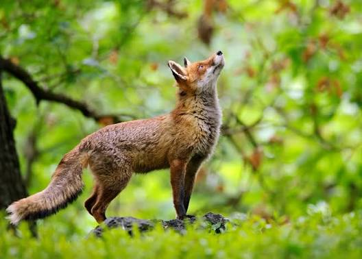
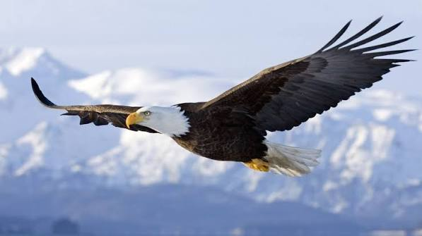

🦁 Mammiferi


Volpe Rossa
Un incontro ravvicinato con uno dei mammiferi più furbi e affascinanti del bosco.
Altre foto🏡 Animali Domestici

Cane (Golden Retriever)
Il compagno di vita ideale: fedele, giocherellone e perfetto per le famiglie.
Altre foto
🦅 Uccelli


Martin Pescatore
Esplosione di colori vivaci in un piccolo e abilissimo pescatore fluviale.
Altre foto🐬 Animali Marini

Tartaruga Marina
Un viaggio rilassante nelle profondità dell'oceano insieme a una creatura millenaria.
Altre foto
Squalo Bianco
La potenza pura del predatore oceanico per eccellenza nelle acque cristalline.
Altre foto🦎 Rettili


Iguana Verde
Un meraviglioso rettile esotico mentre si gode il calore del sole tropicale.
Altre foto